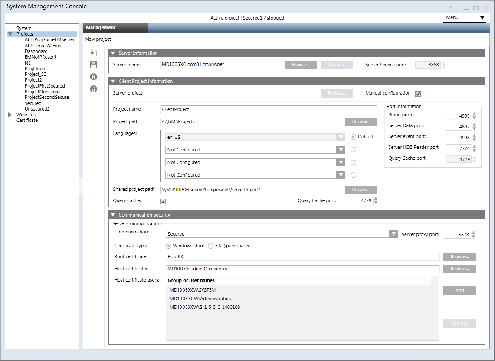

Create a New Project in Manual Configuration Mode on a Client/FEP
When you create a project in manual configuration mode, you must manually enter the client/FEP project details into the relevant fields.
Before you start, make sure that you have all the necessary server project details, including the server name, the ports (except Pmon), the shared project path, and the security details. Although manual configuration mode lets you freely enter the Client/FEP project details (for example, Client/Server communication mode and certificate type), you must still ensure these match those of the selected Server project. Otherwise, Installed Client on Client/FEP does not launch.
You can establish a secured communication between the Server project and the Client/FEP project. For this you either use file (.pem file) based or Windows store based certificates. The following procedure describes the Client/FEP project creation using Windows store based certificates.
On the Server, ensure the following:
- For Windows store certificate:
- the root certificate must be imported in the TRCA store of the Local machine certificates store in the Windows Certificate store.
- only certificates with RSA signature algorithm are supported. CNG certificates are not supported.
- For file (.pem) based certificates, the root certificate must be available on the disk of Server as well as Client/FEP machine.
- Share the Server project that you want to connect to with the logged-on user of the client/FEP operating system before creating the project on the client/FEP.
On the client/FEP machine, you must ensure the following for the Windows store certificates.
- The same valid root certificate as on Server project you are about to configure in the client/FEP project must be imported in the Trusted Root Certification Authorities store of the Local machine certificate store and be set as default.
- The host certificate, along with a key you are going to provide for Secured client/server communication, must be created using the root certificate on the server project. The host must be imported in the Personal store of the Windows Certificate store and be set as default.
- In the SMC tree, select Projects.
- Click Create Project
 .
. - In the Server Information expander, do the following:
a. Select the Manual configuration check box.
b. In the Server name field, type the full computer name of the server or click Browse to locate and select the server using the Workstation Picker dialog box. - The service port is disabled, and the Client Project Information and the Communication Security expanders become available.
- In the Client Project Information expander, do the following:
a. Enter a value into the Project name field.
b. Edit the Project path to change the default.
c. Edit the Languages to match the languages on the server project.
d. Enter a value into the Shared project path or browse for the server project.
NOTE: The shared project path is mandatory for activating the project.
e. Edit the port numbers for the Pmon, Server Data, Server Event, Server HDB Reader and Query Cache port fields.
f. Select the Query Cache port check box that enables the Query Cache port field. Set a unique port number. - In the Communication Security expander, do the following:
a. In the Client/Server Communication drop-down list, change the default setting Secured to Unsecured only when you want to enable the Client/Server communication in Unsecured mode or to Stand-alone only when you want to disable the communication between the server project and the client/FEP station.
b. Type or set the Proxy port field so that it matches that of the selected server project.
c. Select the certificate type to match that of the selected server project. The default selection is Certificate type - Windows store.
d. Click Browse to change and select the root and host certificates, and the host key (only in case of .pem file certificate). Ensure that the root certificate is the same as that of the Server project. Otherwise, the Desigo CC client application will not launch. The host certificate and the host key must be generated from the root certificate provided on the Server project.
e. (Available only when the Client/Server communication type is Secured and the Certificate type is Windows store) Add Host certificate user to the list of users.
NOTE 1: Only users and groups listed for the selected host certificate can launch the Desigo CC client application on the client/FEP station.
NOTE 2: Even if the logged-on user of the client/FEP operating system is a member of the Administrators group and has rights on the private key of the host certificate provided, you still have to explicitly assign this user rights on the host certificate’s private key by adding the Host Certificate User list. - Click Save
 .
.
NOTE: Make sure that the root certificate is the same as that of the Server project. Otherwise, the Desigo CC client application cannot launch, and you must do the following:
a. Click Cancel.
b. In the Root Certificate field of the Communication Security expander, browse for and select the same root certificate as on the server.
c. Click Save.
d. The data entered while creating the project is validated and saved.
- On successful project creation, the new project node is created as a child under the Projects node in the SMC tree. It is in
Stoppedstate you can edit, activate, or delete it. You also can start/stop the project.
A project folder structure is created with subfolders and files at the specified path.
For .pem file certificates, the root and host certificates and the host certificate key file used for secure communication are copied to the path ..\[ProjectName]\Config and the config file is updated.
In case of (.pfx/.cer) certificates, only the config file is updated.

Special Considerations When Applying Security for Closed Mode Configurations
- You must explicitly provide permissions to the closed mode user (GMSDefaultUser) on the private key of the host certificate configured for Client/Server communication, even if the closed mode user (GMSDefaultUser) is a member of the Administrators group and that Administrator group has rights on the private key of the host certificate.
- If you are configuring closed mode on the Client/FEP system, you must provide rights to the GMSDefaultUser of the Client/FEP machine on the project folder on the server.
Tips
- Once a project is created, you must start and activate it. The Installed Client on a Client/FEP station runs pointing to that active project on the Client/FEP computer.
- For a Windows store certificate type, when you click Browse, you must select the Store Location - Local machine Certificates and then select the root certificate from the Trusted Root Certification Authorities tab. The host certificate you need to select from the Personal tab. The root and host certificates must be imported into the Windows store using the SMC.
- The project on Client/FEP project runs in the context of the configured Server project.
- The Server project to which the active Client/FEP project is pointing to must not be active.
- To start the Client/FEP project, you must first start the Server project that is connected to the Client/FEP project you are about to start.
- For the projects created on any other setup type (for example, Client/FEP) than the installed setup type (for example, Server) are listed under the Projects node in the SMC tree in SMC. However, when selected, you cannot work with them, you can only delete them.